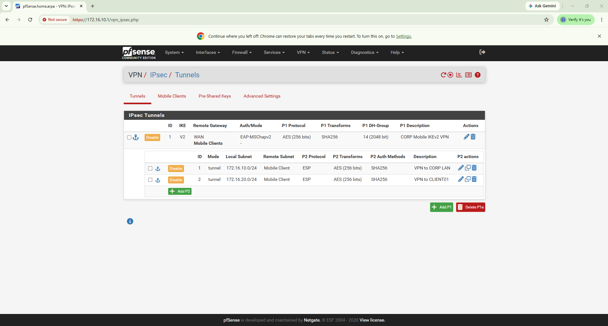
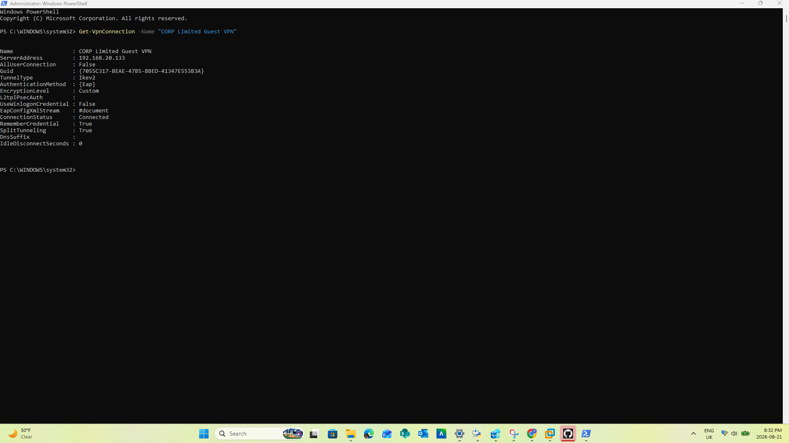
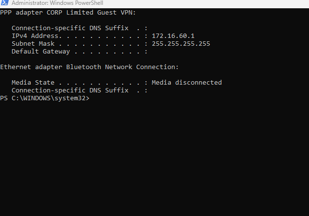
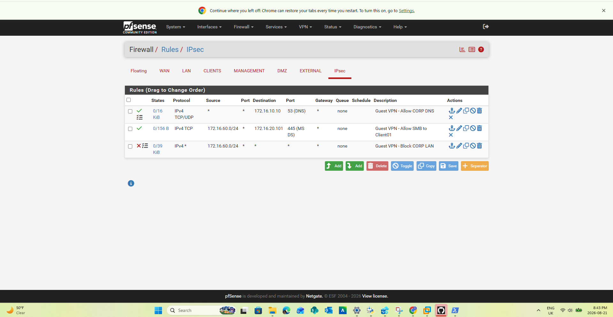
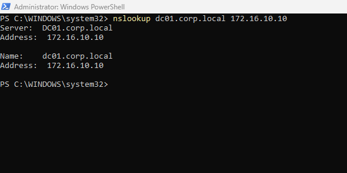
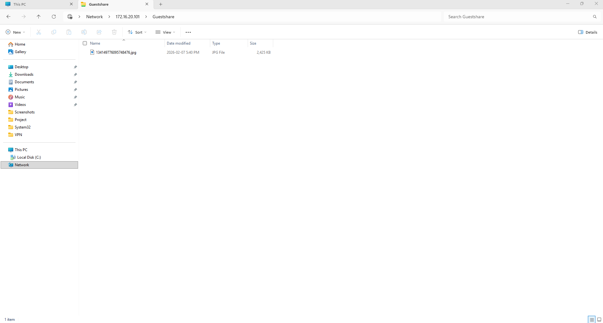
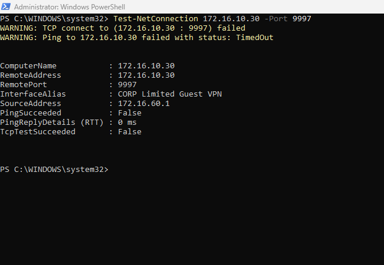
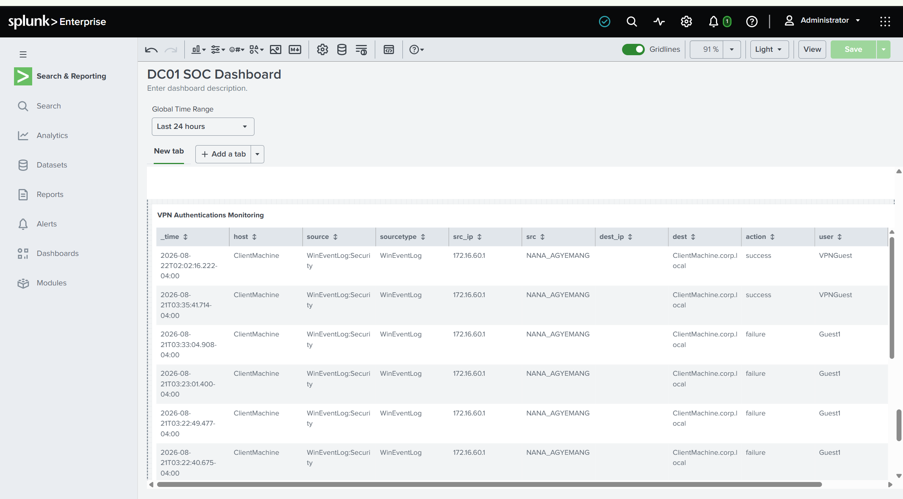

PFSENSE • IKEV2 • IPSEC • REMOTE ACCESS SECURITY
Secure IKEv2 Remote Access VPN
A least-privilege remote-access VPN built with pfSense, IKEv2/IPsec, Windows clients, segmented internal access, split tunneling, and Splunk authentication monitoring.
I designed, configured, validated, and monitored a secure remote-access VPN that allows authenticated remote users to reach only approved internal services while preventing broad access to the corporate network.
Project Snapshot
VPN Technology
IKEv2/IPsec remote-access VPN using pfSense and Windows built-in VPN functionality.
Authentication
EAP-based authentication with pfSense handling remote-access user validation.
Cryptography
AES-256 encryption with SHA-256 integrity and Diffie-Hellman Group 14.
Network Segmentation
Dedicated VPN address pool separated from internal server and client networks.
Least Privilege
Firewall rules permit approved DNS and SMB access while blocking broader internal connectivity.
Monitoring
VPN-related authentication activity centralized and reviewed in Splunk.
VPN Architecture
The design separates remote VPN users from the internal network and relies on pfSense firewall policy to determine exactly which corporate services are reachable.
Remote Windows Client
|
|
IKEv2 / IPsec
|
v
+-------------+
| pfSense |
| VPN Gateway |
+-------------+
|
|
VPN Client Network
172.16.60.0/24
|
|
+------------+-------------+
| |
v v
Corporate DNS Client Share
172.16.10.10 172.16.20.101
TCP/UDP 53 TCP 445
| |
| |
ALLOW ALLOW
|
v
Other Internal Access
|
BLOCK
|
v
Splunk SIEM
Authentication Monitoring
VPN CONFIGURATION
IKEv2 / IPsec Configuration
The pfSense IPsec configuration uses IKEv2 for the remote-access tunnel and defines separate Phase 2 networks for the internal resources that VPN users may need to reach.

Windows VPN Client Validation
The VPN was configured on a Windows system using the built-in Windows VPN client. Connection status was validated through PowerShell.

Dedicated VPN Addressing
Connected remote users receive an address from a dedicated VPN client subnet instead of being placed directly inside an internal LAN segment.

LEAST-PRIVILEGE ACCESS
IPsec Firewall Policy
The IPsec firewall policy was intentionally restrictive. VPN users were not given unrestricted access to the corporate network.
Instead, specific rules permit only the services required by the remote-access use case, followed by a block rule for other internal access.
Corporate DNS
TCP/UDP port 53 is permitted to the corporate DNS server at 172.16.10.10.
Approved SMB
TCP port 445 is permitted from the VPN subnet to the approved client/file-sharing resource at 172.16.20.101.
Internal Network Block
Other access from the VPN client network toward corporate resources is blocked unless explicitly permitted.

Corporate DNS Validation
Remote users must be able to resolve approved internal resources without gaining unrestricted network access.

Authorized Remote File Access
The firewall allows the VPN client to reach a specifically approved SMB resource while maintaining restrictions against unrelated internal services.

SECURITY VALIDATION
Blocked Unauthorized Access
A secure VPN should not simply prove that permitted traffic works. It should also prove that unauthorized traffic is denied.
I tested connectivity from the VPN client to Splunk's forwarding service on TCP port 9997. The connection failed as expected, demonstrating that the remote user did not receive unrestricted access to the server network.

Access Validation Summary
VPN Connection
PASS
Windows client successfully established the
IKEv2 remote-access VPN.
VPN Address Assignment
PASS
Remote client received an address
from the dedicated VPN subnet.
Corporate DNS
PASS
Internal DNS resolution worked
through the approved firewall rule.
SMB File Access
PASS
Approved SMB access worked
to the designated internal resource.
Splunk Port 9997
BLOCKED AS EXPECTED
Unapproved access to the Splunk server
was denied.
Least Privilege
VALIDATED
Access was limited to explicitly
permitted services.
SECURITY MONITORING
VPN Authentication Monitoring with Splunk
Authentication events associated with VPN activity were centralized in Splunk so successful and failed authentication attempts could be reviewed from the SOC environment.

Defense-in-Depth Security Model
Remote User
|
v
IKEv2 / IPsec Encryption
|
v
pfSense VPN Gateway
|
+---- Authentication
|
+---- Dedicated VPN Subnet
| 172.16.60.0/24
|
+---- Firewall Policy
|
+---- DNS 53 ----------> ALLOW
|
+---- SMB 445 ---------> ALLOW
|
+---- Other Internal --> BLOCK
|
v
Windows Security Events
|
v
Splunk Enterprise
|
+---- Successful Authentication
+---- Failed Authentication
+---- Source Address
+---- User Activity
+---- SOC Investigation
Troubleshooting & Validation
The project required troubleshooting across VPN negotiation, routing, firewall policy, DNS, Windows networking, authentication, and monitoring.
IKEv2 Connectivity
Validated tunnel type, client connection state, authentication settings, and pfSense IPsec configuration.
Addressing
Confirmed the Windows VPN adapter received the expected address from the dedicated remote-access subnet.
DNS
Tested internal DNS resolution directly against the corporate DNS server.
Firewall Rules
Validated allow and deny behavior using service-specific connectivity tests.
SMB Access
Confirmed authorized access to the approved remote file share.
SIEM Visibility
Verified VPN-related authentication activity was visible in Splunk.
Final Results
Secure Remote Access
Operational IKEv2/IPsec VPN for Windows remote users.
Segmented VPN Network
Remote users placed into a dedicated 172.16.60.0/24 address space.
Least-Privilege Policy
VPN users receive only the network access required by the use case.
Internal DNS
Corporate DNS resolution successfully available to remote users.
Controlled File Access
Authorized SMB access works while unrelated internal access remains restricted.
SOC Monitoring
VPN authentication activity visible in Splunk for investigation.
Skills Demonstrated
Full Technical Documentation
The GitHub repository contains additional implementation details, configuration steps, testing evidence, troubleshooting notes, and supporting documentation for the remote-access VPN project.